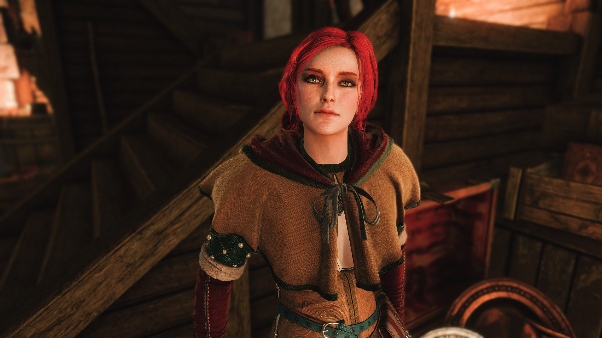

Трисс Меригольд («Четырнадцатая с холма») – участница ложи чародеек, советница при дворе короля Фольтеста, любовница Геральта и просто сногсшибательная женщина.
Родилась талантливая чародейка в 1253 году в семье сапожника. Родом она из славного града Марибор. Многодетная семья жила весьма бедно, денег едва хватало хотя бы на какое-то пропитание. Положение дел ухудшилось после смерти отца (по другой версии он начал пьянствовать и позабыл о семье). Трисс вместе с тремя братьями и двумя сестрами попрошайничали, пытались ухватить хоть какой-то грязный кусок черствого хлеба.
Мать наконец-то решается и делает весьма тяжелый для себя шаг – она отдает маленькую Трисс местной чародейке. За чет незаурядных способностей Трисс довольно быстро обучается. Вскоре она овладевает магией в совершенстве.
В свои двадцать лет она попадает в совет Фольтеста, а после уже и в высшее магическое общество. Именно здесь происходит ее знакомство с Йеннифер, с которой в дальнейшем Трисс свяжут дружеские узы. Именно благодаря этой магичке Трисс встречается с Геральтом и всеми последующими.
Стоит упомянуть, что Трисс принимала участие в сражении на Содденском Холме против Нильфгаарда. Но из-за нехватки опыта и не закаленности характера ее охватил ужас, она поддалась панике и потеряла сознание. Долгое время она считалась погибшей, хотя на самом деле была на реабилитации после тяжелого ранения. Перешагнуть через свой страх её удалось лишь после погрома в Ривии.
Она является светлым персонажем, так как обладает такими качествами, как милосердие, сочувствие и сострадание. Трисс всегда жаждет помочь людям, найти лекарство от многих смертельных и неизлечимых болезней. Если не брать в счет ситуацию с Геральтом и Йенифер, она верна и преданна. Ей не чуждо стеснение. Чародейка испытывает ненависть лишь к тем, кто пытается воспользоваться ею или открыто льстит. В этом случае она даже способна на различные пакости. Правда совесть еще долго заставляет девушку отводить взгляд от собеседника.
Гордостью и самой любимой деталью своей внешности девушка считает волосы: «Цвета октябрьского каштана», мягкие, немного вьющиеся и пышные. Как и у всех чародеек у нее была красивая осанка и особенно хороша талия. Резкий взгляд зеленых глаз всегда отличался своей пронзительностью. Из одежды она любила подбирать цвета, которые подчеркивали бы цвет ее глаз.